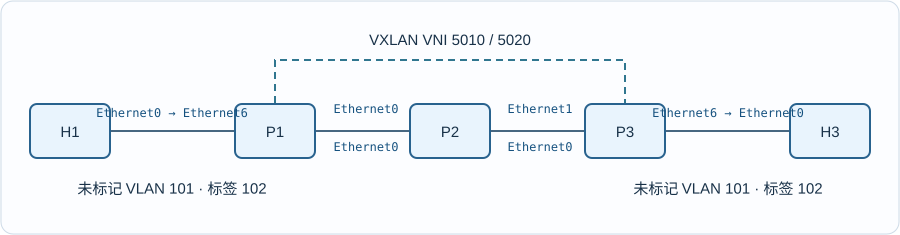

两个二层 VNI 的接入与独立撤销
拓扑

对象 |
P1 站点 |
P3 站点 |
|---|---|---|
到 P2 |
Ethernet0， |
Ethernet0， |
LoopBack0 / VTEP |
|
|
VLAN 101 / BD 101 / VNI 5010 |
H1 |
H3 |
VLAN 102 / BD 102 / VNI 5020 |
H1 |
H3 |
配置条件
在 P2 配置两个连接网段，并将两端的 VTEP /32 分别指向 P1、P3。P1 与 P3 各经 P2 到达对端 VTEP。从本地 LoopBack0 分别探测对端 VTEP，确认底层可达后再建立 EVPN。
配置步骤
P2
interface Ethernet 0
ip address 10.201.12.2 255.255.255.0
#
interface Ethernet 1
ip address 10.201.23.2 255.255.255.0
#
ip route-static 10.255.0.1 255.255.255.255 10.201.12.1
ip route-static 10.255.0.3 255.255.255.255 10.201.23.3
#
return
P1 与 P3
两端用 AS 65000 建立 EVPN，VNI 和 RT 对齐，RD 使用上表的本地值。P1 配置片段如下。P3 将地址和 RD 换为上表的 P3 值，对端改为 10.255.0.1。
enable switch
#
interface Ethernet 0
ip address 10.201.12.1 255.255.255.0
#
interface LoopBack0
ip address 10.255.0.1 255.255.255.255
#
ip route-static 10.255.0.3 255.255.255.255 10.201.12.2
#
evpn-overlay enable
#
vlan batch 101 102
#
bridge-domain 101
l2 binding vlan 101
vxlan vni 5010
evpn
route-distinguisher 65000:101
vpn-target 65000:5010 import-extcommunity
vpn-target 65000:5010 export-extcommunity
#
bridge-domain 102
l2 binding vlan 102
vxlan vni 5020
evpn
route-distinguisher 65000:102
vpn-target 65000:5020 import-extcommunity
vpn-target 65000:5020 export-extcommunity
#
interface Ethernet 6
portswitch
port link-type trunk
port trunk allow-pass vlan 101 102
port trunk pvid vlan 101
#
interface Nve1
source 10.255.0.1
vni 5010 head-end peer-list protocol bgp
vni 5020 head-end peer-list protocol bgp
#
bgp 65000
router-id 10.255.0.1
peer 10.255.0.3 as-number 65000
peer 10.255.0.3 connect-interface LoopBack0
l2vpn-family evpn
peer 10.255.0.3 enable
#
return
在 P1 和 P3 提交。终端接入 Ethernet6，VLAN 101 使用未标记帧，VLAN 102 使用标签 102。如果会话已建立但二层不通，先核对 BD 的 l2 binding vlan、入方向 PVID 和对端的标签规则。
验证与撤销
display bgp evpn peer
display vxlan tunnel
display mac-address bridge-domain 101
display mac-address bridge-domain 102
两端终端各在自己的业务网段发包。在 P1 核对本地接入口与远端 VTEP。以下为同一拓扑上的隧道表实测节选。
Tunnel ID Source Destination State Type
20 10.255.0.1 10.255.0.3 up L2 dynamic
21 10.255.0.1 10.255.0.3 up L2 dynamic
在 P1 的 Nve1 撤销 vni 5010 head-end peer-list protocol bgp 并提交，重复两个网段的探测。实测 VNI 5010 的远端路由撤销且对应业务不通，VNI 5020 的业务继续转发。重新配置 VNI 5010 后两个网段均恢复。